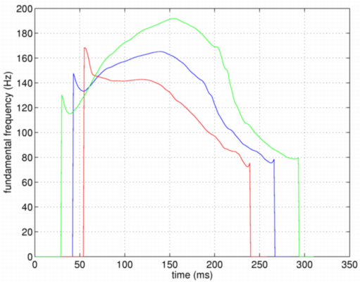
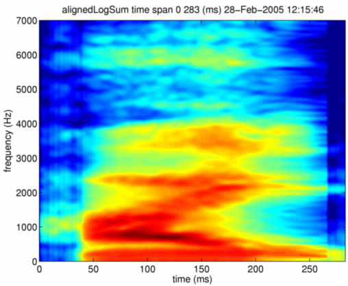
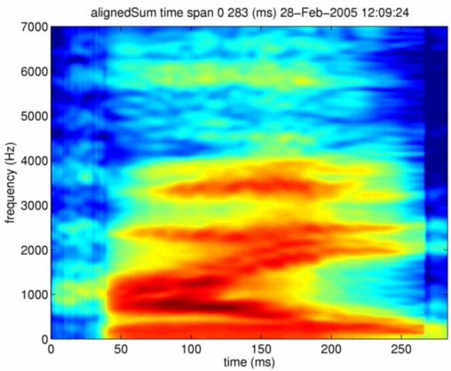
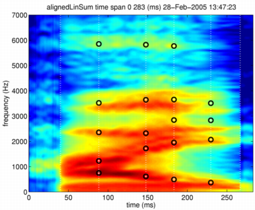

| | | Morphing with STRAIGHT parameter and location information | Contents | Index |
The next extension is time alignment. Frequency axis alignment is not introduced at this stage. It is interesting to observe that synthesized sounds sound reasonably natural even with this incomplete morphing. The morphing function at this stage is implemented as timeAlignedDirectSTRAIGHTmorphing. The first parameter and the second parameter represents M-objects to be morphed. The third parameter represents the morphing rate that is amount of the second component to be mixed (sum of this rate and the amount of the first component is constrained to be one). The last component defines mixing axis. Currently linear and log are provided.
mObjectdmy = timeAlignedDirectSTRAIGHTmorphing(neutralHai,angryHai,0.5,'log');
The morphed time axis by this procedure is similar to that produced by the final form. A piecewise linear interpolation is used to implement mapping between two M-objects' time axes using location information of anchor points. The following plot shows F0 trajectories for different morphing rates (red line: 0, blue line: 0.5 and green line: 1).

The following figure shows morphed STRAIGHT spectrum. Formant trajectories look closer to that of natural ones than the previous morphing function without time alignment.

Similarly, the M-object resulted by this morphing can be used to generate morphed speech sound. The morphed speech sound by time aligned STRAIGHT spectrogramsounds closer to the natural ones than the previous examples without time alignment. However, when linear interpolation is used, the morphed STRAIGHT spectrogram still shows doubled formant trajectories.

This morphing interpolates anchor points based on their correspondence. This interpolation results in moving of those points. The following commands display relocated anchor points on morphed STRAIGHT spectrogram.
displayMobject(mObjectdmy,'anchorTimeLocation','alignedLinSum'); axis([0 283 0 7000])
This interpolation is implemented using linear interpolation. (It may be better to use ERB axis for interpolation when differences between anchor point frequencies are large.) The following figure shows relocated anchor points on morphed STRAIGHT spectrogram. Note that these moved anchor points are not suitably corresponding to characteristic spectral features on the morphed STRAIGHT spectrogram.

| | | Morphing with STRAIGHT parameter and location information | Contents | Index |